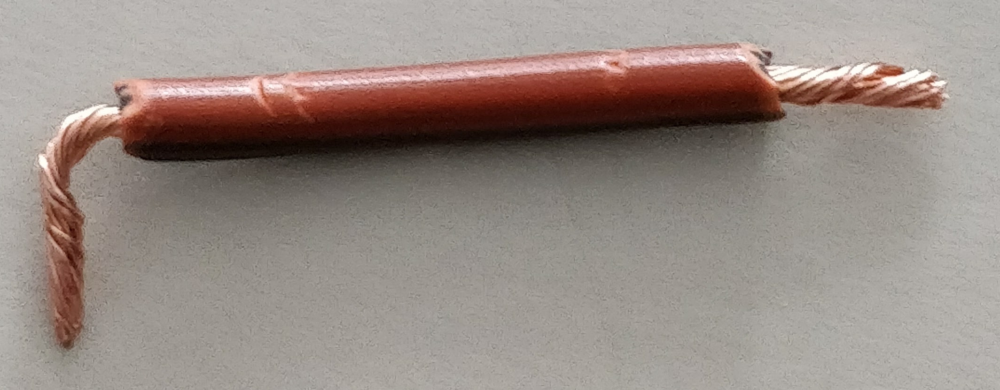
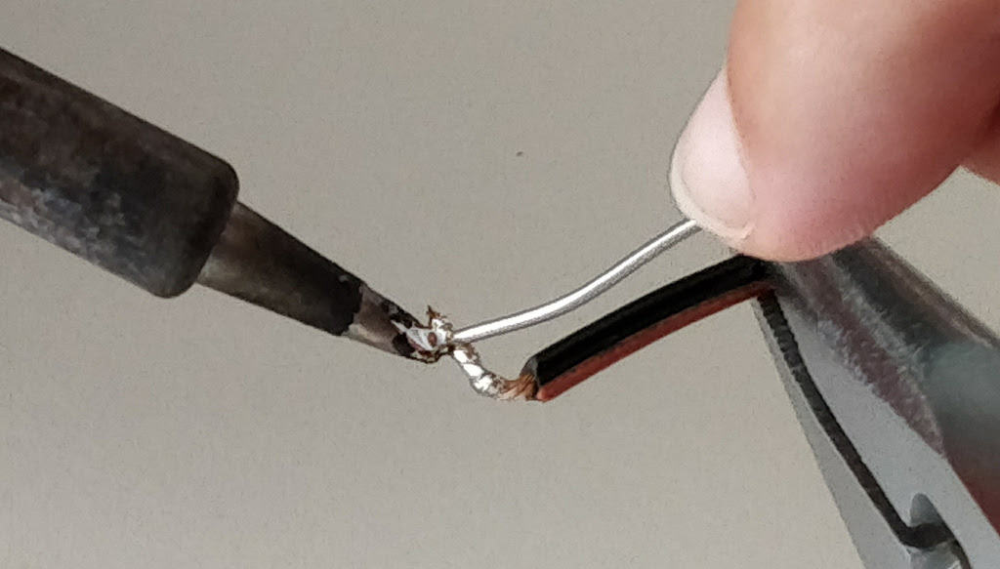
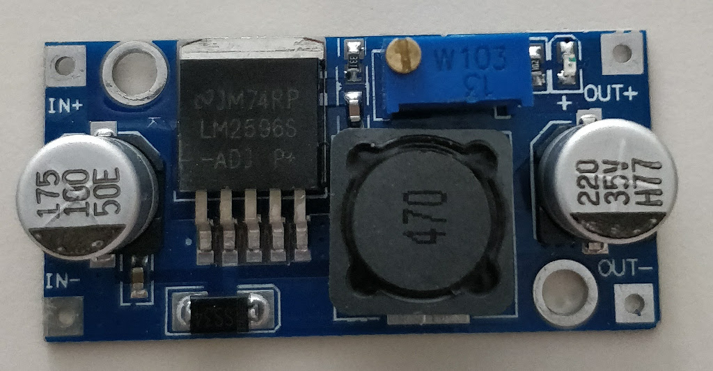
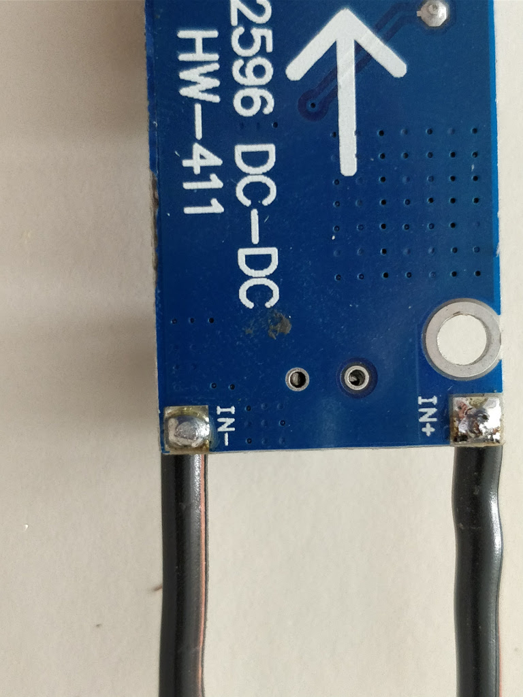
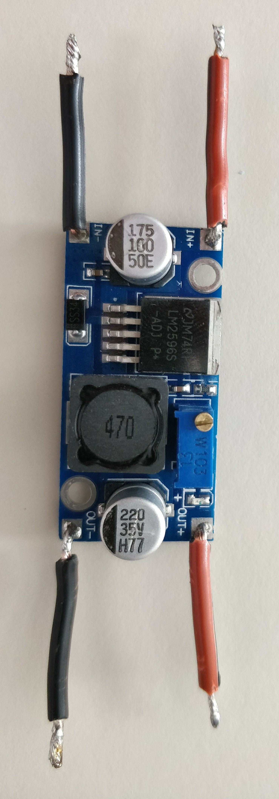
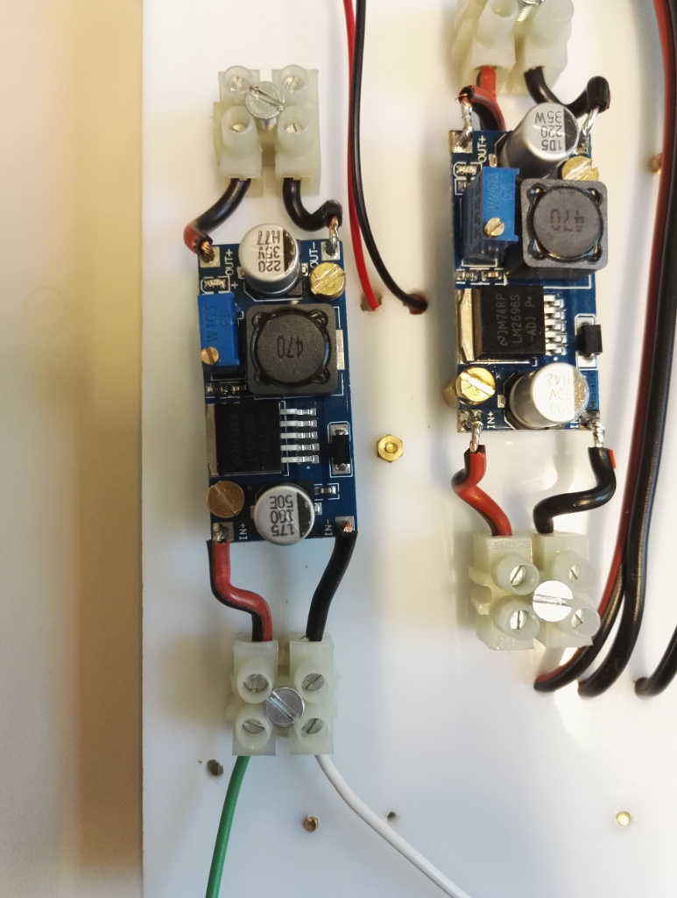
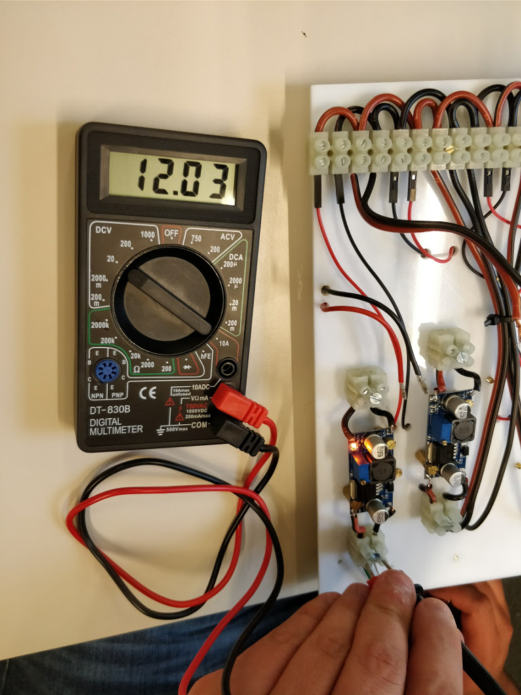
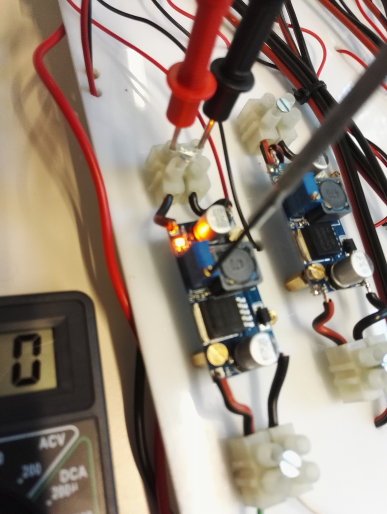
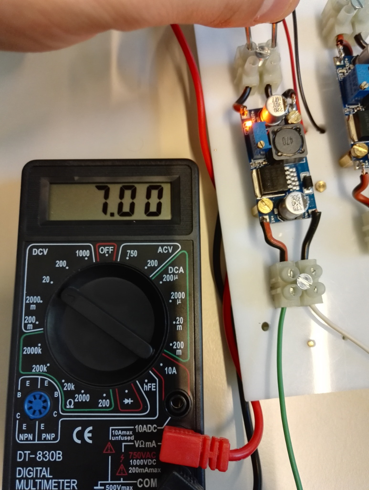

Buck converter soldering¶
This is a short guide where you will be able to solder the buck converter. Follow these steps:
Prepare four cables (two black and two red) with a length of about 2.5 cm and spell them.
 Solder the cable terminations
 Take the buck converter, insert the cables into the holes and solder them from the backside
  Note
Insert the red cables in the holes with the ‘+’, black cables in the holes with the ‘-‘
In the following figure there is the final result

Buck converter calibration¶
When the converters are soldered with the cables, you can start to configure them according to the voltage needed.
The weather station needs two buck converters both powered by 12 Volts. One must provide 7 Volts and the other 5 Volts as output voltage.
Note
In the following steps you will be able to set the buck converter with a voltage of 7V. Please, use the same steps to set the other converter with an output currrent of 5V.
Note
Be careful. The buck converter must not be wired to any internal/external components during the calibration
Follow these steps:
Connect the converter to a power supply. In the figure below the green and white calbles come from a power adapter which provides 12V DC.
 Use the multimeter to check the input voltage (12V)
 Use the multimeter to check the output voltage (7V). To make the voltage output higher, use a screwer to turn right the brass screw. On the contrary turn left to make the output voltage lower.
 The converter is calibrated, when the voltage on the multimeter reaches the 7V.


{kind=link}
{kind=link}
{kind=link}
{kind=link}
{kind=link}
{kind=link}
{kind=link}
{kind=link}
{kind=link}